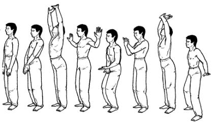

Руки толкают небо

Исходное положение: ноги вместе, плечи слегка отведены назад, руки свободно опущены вдоль тела, ладони касаются бедер.
Начинаем вдох нижней частью живота, при этом плечи, подаваясь вперед, сдавливают верхнюю часть грудной клетки, препятствуя ее расширению; мышцы ягодиц поджимаются. Ладони, поворачиваясь наружу, внизу перед телом соединяются тыльной поверхностью. Руки медленно поднимаем вверх, освобождая грудную клетку, способствуя заполнению при вдохе средней и верхней части легких. Одновременно с руками поднимаем вверх голову, глазами следим за кистями рук. При движении рук в крайнее верхнее положение важно ощутить мягкое потягивающее движение всего тела вверх, не лишенное определенной приятности. Пятки от пола не отрывать.
Медленно выдыхая воздух, слегка расслабляясь, опускаем руки через стороны вниз, сгибая в локтях и максимально отжимая пальцы. Плечи, опускаясь, сдавливают грудную клетку, способствуя более полному выдоху; колени слегка сгибаются. Внизу руки скрещиваются, правая под левой, касаясь предплечьями, ладони повернуты кверху.
Делаем вдох несколько более энергичный, поднимаем руки вверх, поворачивая на уровне лица ладони наружу. При этом плечи массируют грудную клетку, как описано ранее. Одновременно поднимаем голову вверх, следим за кистями рук, колени выпрямляются. В конце движения пальцы отогнуты назад, нижняя часть левой ладони надавливает на тыльную сторону правой кисти в области лучезапястного сустава. Руки напряжены в ладонях и как бы «упираются в небо».
С резким выдохом руки круговым движением опускаем вниз, разводя в стороны, локти слегка согнуты, ладони смотрят вниз, пальцы отогнуты. Одновременно с опусканием рук левую ногу отставляем в сторону на ширину плеч, колени слегка сгибаются. Движение завершается кратковременным напряжением рук и всего тела. Затем расслабляем тело и возвращаемся в исходное положение, приставляя левую ногу к правой.
Эта часть упражнения должна сопровождаться ощущением сбрасывания тяжести, которую мы «держали» над головой.
Упражнение выполняется непрерывно, движения как бы «перетекают» одно в другое.
Повторить 3 раза.
Next up: Птенец покидает гнездо